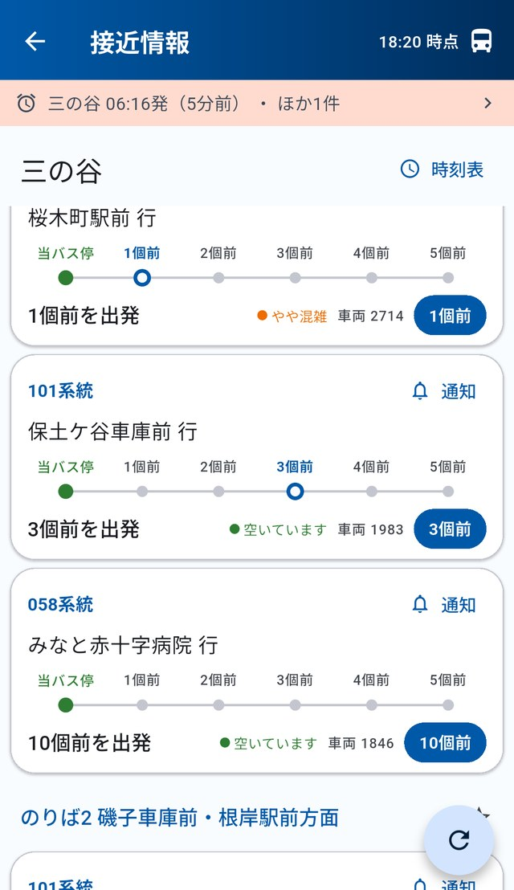
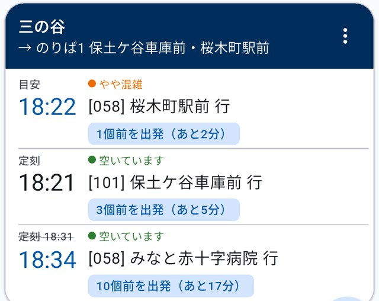
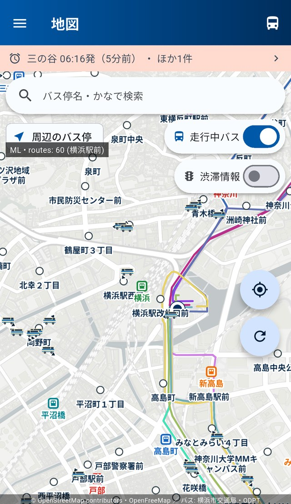

横浜市営バス専用・非公式
あのバス、
あのバス、
今どこにいる？
バスの現在地、あと何個前か、何分遅れか。
横浜市営バスの「今」だけを、まっすぐ表示します。
無料・iOS / Android 対応

POINT
お気に入り画面のカード（拡大）
「あと2分」まで分かります
定刻だけでなく、そのバスが今どこを走っているかから逆算します。 遅れているときは、定刻に取り消し線を引いて実際の見込み時刻を出します。

MAP
走っているバスが、地図に出ます
車体の塗装まで描き分けているので、「あかいくつ」やベイサイドブルーもひと目で分かります。 進行方向に合わせて、バスの向きも変わります。

- 走っているバスの現在地
- のりばの位置と方面
- 現在地と、近くのバス停
- 鉄道駅（事業者ごとの色）
- 渋滞している区間
WHAT'S NEW
最新アップデート
v7.0.0
- お気に入り・接近情報がちゃんと更新されるように更新ボタンや引っ張って更新を行っても、バスの表示が実際には更新されないことがある不具合を修正しました。
- 到着予測の精度をさらに向上実際の運行実績データを追加で収集し、より多くの区間・より新しい実績をアプリに反映しました。
これまでの改善
v6.0.0
- 接近の数字が止まらなくなりましたバスの位置情報は約30秒ごとに届きますが、その合間もアプリが覚えた実績をもとに「◯個前」「あと◯分」が数秒ごとに進むようにしました。
- お気に入りの接近が更新されない不具合を修正方面・のりば別が更新されない、更新しても「運行中のバスはありません」になる、といった不具合を根本から修正しました。
v5.1.0
- 入れた日から到着予測が実測ベースに実際にバスが走った所要時間を13,872区間ぶん、あらかじめアプリに内蔵しました。
- 「終バス」検索を使いやすく最終を調べたときは、一番遅く乗れる便がいちばん上に並ぶようにしました。
v5.0.0
- 使うほど時間が正確にバスが実際に走った所要時間を覚えて、到着予測に反映します。停車も信号待ちも渋滞も含まれるので、朝夕の混む時間ほど実態に近づきます。
- 地図のバスを実車の塗装で表示「あかいくつ」やベイサイドブルーなど、観光路線のバスがひと目で分かります。
これまでの更新の全履歴は、アプリ内メニューの「お知らせ」からご覧いただけます。
FEATURES
できること
時刻表のりば・方面・系統ごとに表示。通信がなくても開けます。
接近情報今どこ？ 何個前？ 遅れと混雑もあわせて。
地図走っているバス、のりば、現在地、鉄道駅。
ルート検索出発・到着・始発・最終から探せます。
お気に入りよく使うバス停をまとめて確認。
通知・アラーム乗り忘れ・降り過ごしを、遅れ込みでお知らせ。
SNS
更新情報を発信しています
アップデートのお知らせ、使い方の小ネタ、横浜のバスにまつわる話を投稿しています。 ご意見・不具合のご報告も、SNSのリプライやコメントで受け付けています。
DATA
データと出典
- 時刻表・路線・運行データ 公共交通オープンデータセンター（ODPT）／横浜市交通局
- 地図 OpenFreeMap ／ OpenMapTiles ／ © OpenStreetMap contributors（描画: MapLibre）
- 鉄道駅データ HeartRails Express
- 祝日データ 内閣府
本アプリは横浜市交通局が提供する公式アプリではありません。個人が開発した非公式アプリです。運行情報は公開データをもとに表示しており、実際の運行と異なる場合があります。ご利用の際は現地の案内表示もあわせてご確認ください。